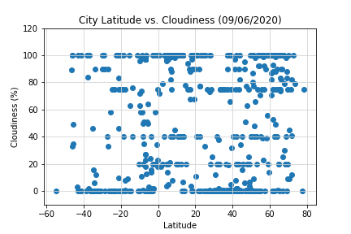

Climate Analysis
Analysis done is to identify the effect of Latitude on cities temperature, humidity, cloudiness and wind speed with 50 cities chosen randomly. Latitude of the 50 cities were ploted on a scattered plots as well as a linear regression.
Temperature Analysis

Analysis to compare the maximum temperature with latitude of a city
Humidity Analysis

Analysis to compare humidity with latitude of a city
Cloudiness Analysis

Analysis to compare cloudiness to the latitude of a city
Wind speed Analysis

Analysis to compare cloudiness to the latitude of a city